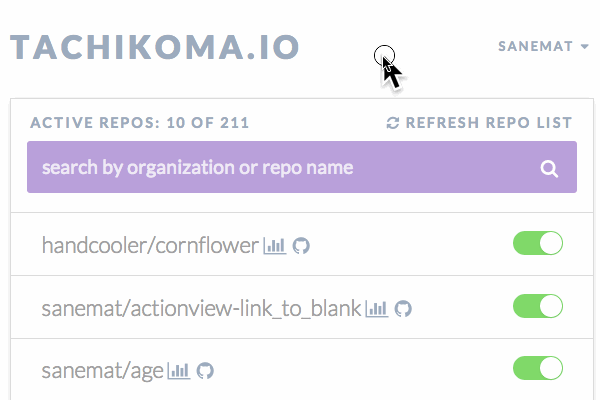

Do you use the latest jQuery?
そのjQueryは最新版?
そのまえに
POODLE, ShellShock, HeartBleed, 対応した?
セキュリティフィックスはいつでも出てくる。
jQuery
v1.11.1/v2.1.1(2014-10-15 19:00現在)
bower install jquery
bowerかnpmで管理しましょう。npmではofficialには配布してないかも。
e.g. jQuery v1.4
あとで: 例に出したわりに、bowerはbower.lockがv2で入るので、それまではbower対応しない予定。
この資料は http://bit.ly/1w29hH7 です。
When was the build failing? Actually 'Now'?
いつ落ちたの? ホントに「今」?

Travis CIとGitHubを使っていると、プログラミング言語問わずよくある話だと思う。 使いたいライブラリAのテストが落ちてるぞ。 Travis CI見て、どこが落ちてるかわかったぞ。 ちょっと調べて、これがAPIの必須パラメーターが足りなくなっていることが原因だとわかった。 テスト落ちてるの直したぞ。 プルリクエストを送って、あれ?  うわぁぁぁぁ。 Fail, Fail, Fail and Fail!
うわぁぁぁぁ。 Fail, Fail, Fail and Fail!
 これはライブラリAの依存するライブラリの話。 依存バージョンを固定していなかったことが原因の一つではある。 ただし、依存バージョンを固定してればよかった、という話では ない 。 このライブラリAが依存するライブラリBのバグを踏んでいた。 なので、依存するライブラリBのバージョンはどうしても上げる必要があった。 バージョンひとつ上げるならよかった。 だけど、その依存ライブラリBを最新版にするにはnode.jsのバージョンを上げる必要があった。 node.jsのバージョンを上げると、別の依存ライブラリCが壊れるので、 以下略 壊れたのは 今 じゃない 今 のpull requestではテストが盛大に落ちる、場所の特定も面倒だ。 もしこれが、はじめのfailの段階なら、場所を特定するのも簡単。直すのも簡単だった。
これはライブラリAの依存するライブラリの話。 依存バージョンを固定していなかったことが原因の一つではある。 ただし、依存バージョンを固定してればよかった、という話では ない 。 このライブラリAが依存するライブラリBのバグを踏んでいた。 なので、依存するライブラリBのバージョンはどうしても上げる必要があった。 バージョンひとつ上げるならよかった。 だけど、その依存ライブラリBを最新版にするにはnode.jsのバージョンを上げる必要があった。 node.jsのバージョンを上げると、別の依存ライブラリCが壊れるので、 以下略 壊れたのは 今 じゃない 今 のpull requestではテストが盛大に落ちる、場所の特定も面倒だ。 もしこれが、はじめのfailの段階なら、場所を特定するのも簡単。直すのも簡単だった。
I'm sick of this!
こういうの、うんざりだ! よくある! ここまでの話は他人のライブラリを使う時の話。 おなじことは自分が、ライブラリの提供側・アプリの提供側の時も言える。 まずは、提供側から何とかするぞ! 神webアプリつくった Tachikoma.io
 定期的な Pull Request 何がいいか? Travis CIのAPIで、rebuildするのとの違い いつから落ちたか視覚的にTravis CIとGitHubでわかる。 ゆるめのバージョン指定が一番良い。semver... Travis CIでビルドログを見るとわかる。 Travis CIのできることはTravis CIに任せる。 Tachikoma.ioのできることはTachikoma.ioに任せる。 あなたはあなたのやりたいことをやろう。 だって依存のアップデートがあなたのやりたいことじゃないでしょう? アプリケーション書きたいでしょ! なかなかいいアプリでしょう?
もう一回。 Tachikoma.ioがしてくれること。 リポジトリのmaster branchに対して、何もせずに、定期的に、Pull Requestを送る。 すると、Travis CIのpass/failで差分に気付く。
One more thing...
おまけ 何もせずに、定期的に、Pull Requestを送る、と言いました。 各言語編 ruby: bundler, perl: carton, node.js: npm と言語ごとにパッケージマネージャーがある。 Gemfile, Gemfile.lock, cpanfile, cpanfile.snapshot, package.json, etc. と依存関係コントロールするためのメタファイル群がある。 これらは依存関係update hellだ。 これはもうこまめに定期的に最新安定版にアップデートしていく以外生き延びるすべはないのは確定的に明らか。 定期的に bundle update (ruby) / carton update (perl) / david update (node.js) やってますか? やってないでしょ? やってる? もっと簡単になるよ。 それTachikoma.ioで出来るよ。.tachikoma.ymlを置くだけでok。
.tachikoma.yml
strategy: bundler
strategy: carton
strategy: david
strategy: none (default)定期的に bundle updateしてTachikoma.ioからpull requestが来る。 この場合、Travis CI のbuildログだけでなく、GitHubのcompare viewも頼りになる。 Tachikoma.ioのできることはTachikoma.ioに任せる。 あなたはあなたのやりたいことをやろう。
Summary
public repos版はFree! private repos版は月額有料です
- for private individual $9/mo
$19 - for private organization $49/mo
- for enterprise
- email: sanemat {AT} tachikoma.io
This is service statement below
この下のはサービスステートメントです:
ライブラリの依存バージョンを上げないことは、すぐにはライブラリやアプリケーションにダメージを与えません。 新しく使いたいライブラリを追加するときに、既存のライブラリにセキュリティフィックスが出たときに、それぞれが正しく動作するバージョンの組み合わせを見つけることは、非常に困難です。 仮に組み合わせを見つけたとしても、すごく後ろ向きですし、次を追加するとき、より困難になって立ちはだかります。 また、ライブラリの新機能、スピードアップ、Ruby/Node.js/etc.のバージョンアップなどメリットを享受するために低いバージョンだとそれが使えないことがあります。 結果的に一番痛みが少ないのは、常に定期的に(安定した)最新版を組み合わせていくことです。 ここまでみんな知ってるしわかってるのに、なぜ出来ない?
それはツールやインテグレーションがまだ不足しているからだ、と私は考えます。 それを埋める1つのパーツがTachikoma.ioです。
sanemat {AT} tachikoma.io
The progress
9/17のtravis ci meetupのLTで公にお披露目。 9/18-9/20のはてなブックマーク効果、130 accounts。 hacker newsで+10, プラスアルファで現在2014-10-15 19:23 145。 private reposの有料アカウント 0。 pull requestから人が集まる妄想してたけど、今のところそんなことは起きてない。 1件だけ。しかも未対応のpython… Exec tachikoma update 20140918181203 by tachikomapocket Pull Request #172 kawazrepos/Kawaz3rd 甘くないなー 影響力のある人/プロダクトに使ってもらう(?) ちょっと博打的発想。 課金->使用ではなく、1mo無料->課金 にした方がいいかも。(小手先) 別のマネタイズ? テストやライブラリの統計・解析・分析など
仮説
bundle updateで日々バージョンを上げていくことが大事だとわかっている企業/個人は、もう内部でその仕組を持っている(?) 必要だと思った人は内製してそう。e.g. Quipper などもとのtachikoma gem ユーザー。 Rails界隈以外はそんなにアップデートで死んでない。 この仕組に載せるまで、まず最新に追いつくところ、が職人芸なので、そこを何とかしたら良い?? しなければいけない? 定期的にクリーンな環境から何かを提供するaggregatorになる? travis-ci, circle ciのアドオン提供など?